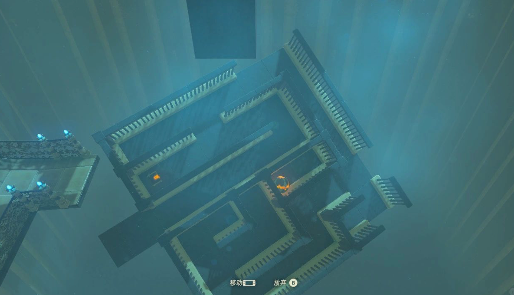
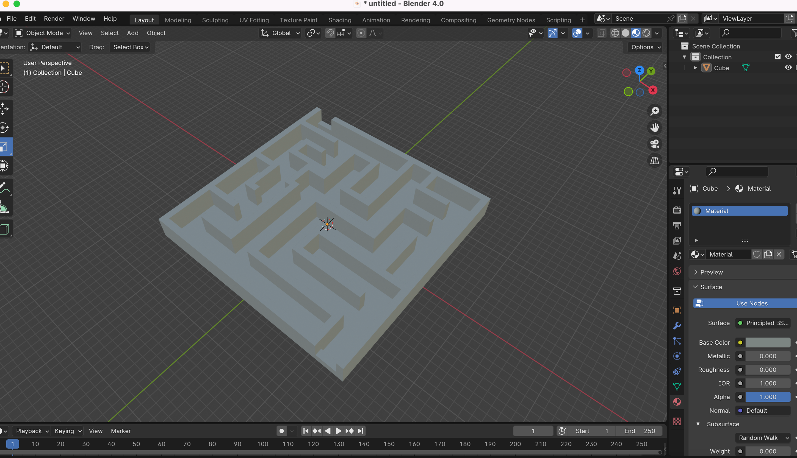
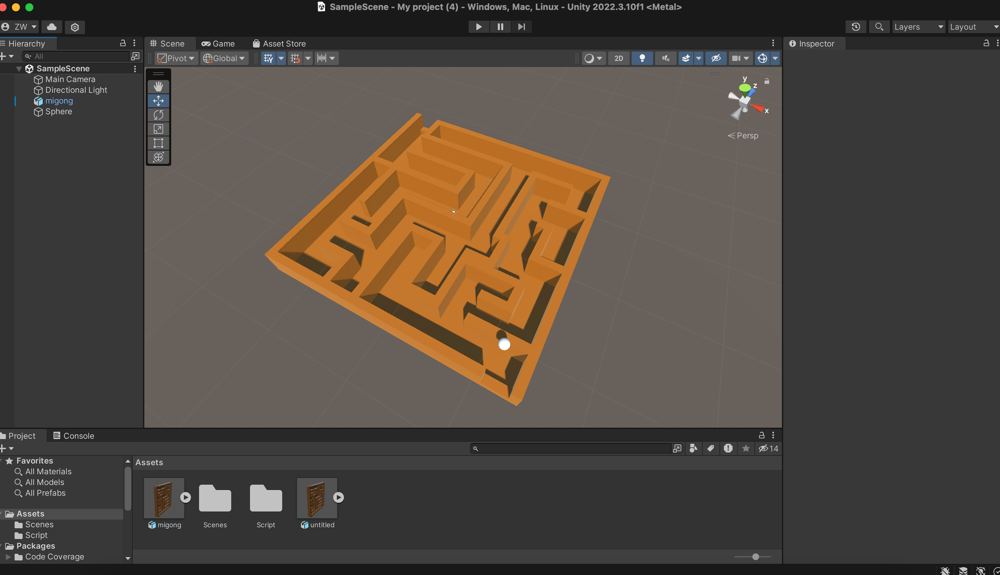
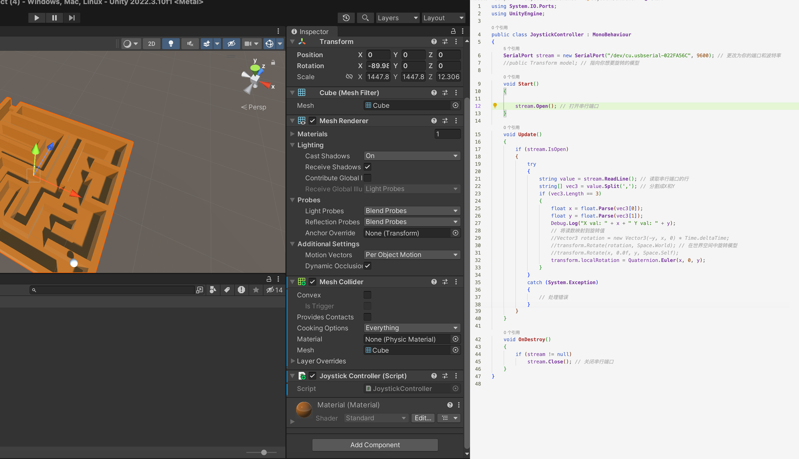
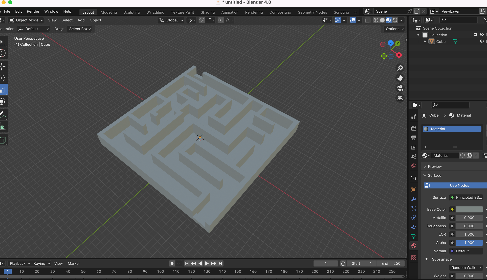
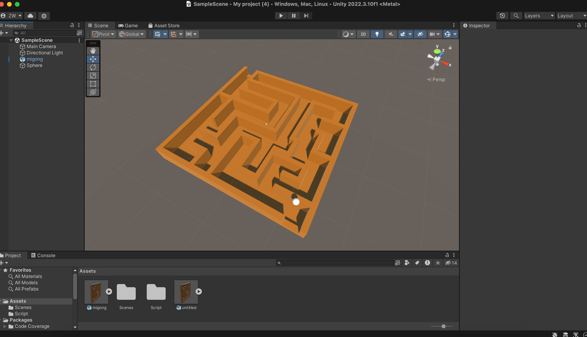
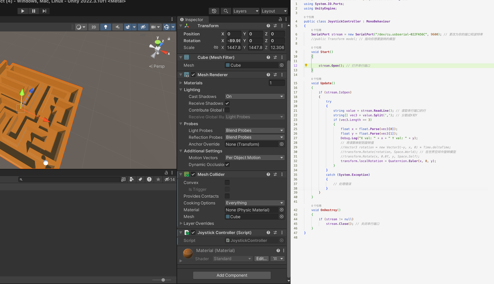

Project3_Build and Play
I tried to recreate the labyrinth of the Temple of Miama Cana from the game Tears of Kingdom by controlling the steering of the labyrinth so that the little ball inside the labyrinth rolls from the entrance to the exit.
 




